A puff adder snake is coiled on the ground amidst dry grass and soil, its reddish-brown scales blending with the earthy surroundings. Nearby, a cat cautiously approaches, sniffing and investigating the snake’s position before stepping back slightly. The scene captures a tense standoff between predator and prey in a natural habitat.
cat · val
akfull_video_grounding_CKFFASBA_00261000
单目伪角度跨度 ≥45°，待核实 · 最大跨度 116.9°
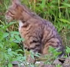
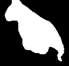
animal_single_view · 未知 existing_reference
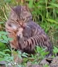
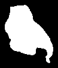
animal_single_view · 158.6° existing_target_mask
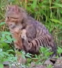
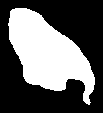
animal_single_view · 275.5° existing_target_mask
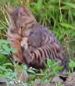
animal_single_view · 234.8° existing_target_mask
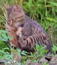
animal_single_view · 184.5° existing_target_mask
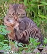
animal_single_view · 167.1° existing_target_mask
查看随机取图与同步增强（3次可复现抽样）
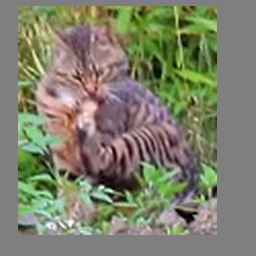
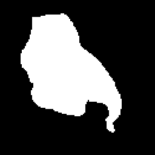
抽样 0 · animal_single_view-000804
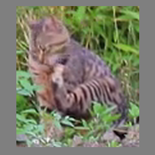
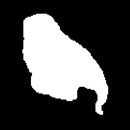
抽样 1 · animal_single_view-000828
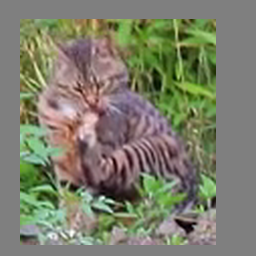
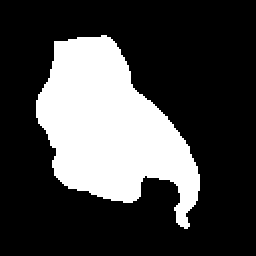
抽样 2 · animal_single_view-000804
A brown tabby cat sits on a muddy bank beside a pond, facing left with its body angled slightly toward the water. A duck swims calmly in the foreground, partially obscured by algae-covered water. Sparse green vegetation borders the bank, and the cat remains still throughout the scene.
cat · val
akfull_action_recognition_IPXPHSBA_00000000
当前朝向多样性不足 · 最大跨度 0.0°
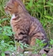
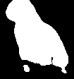
animal_single_view · 未知 existing_reference
查看随机取图与同步增强（3次可复现抽样）
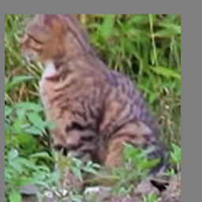
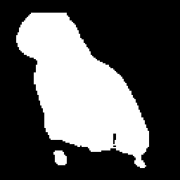
抽样 0 · original
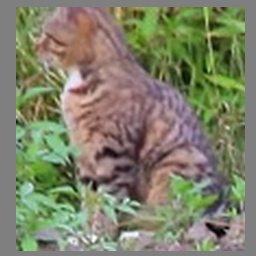
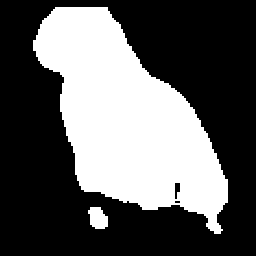
抽样 1 · original
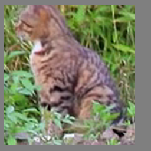
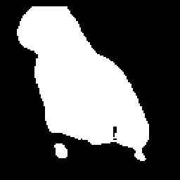
抽样 2 · original
A brown tabby cat sits calmly on a patch of earth near a pond, observing its surroundings. In the foreground, a duck swims peacefully across the murky water, occasionally dipping its head underwater. Sparse vegetation borders the pond, adding to the tranquil natural setting.
cattle · train
akfull_action_recognition_BAAOFDFC_00000000
单目伪角度跨度 ≥45°，待核实 · 最大跨度 178.9°
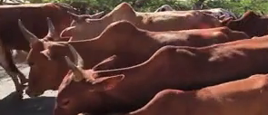
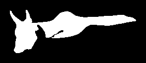
animal_single_view · 未知 existing_reference
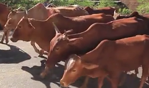
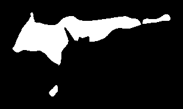
animal_single_view · 313.0° existing_target_mask
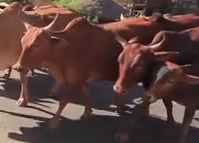
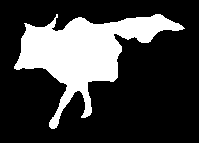
animal_single_view · 134.1° existing_target_mask
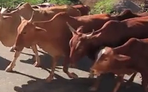
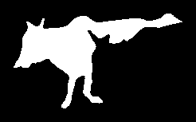
animal_single_view · 232.0° existing_target_mask
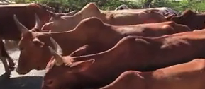
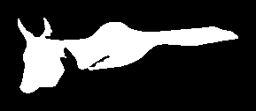
animal_single_view · 278.6° existing_target_mask
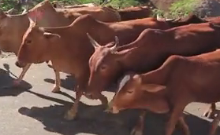
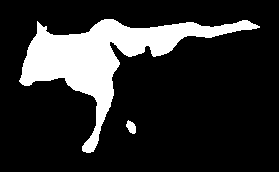
animal_single_view · 155.7° existing_target_mask
查看随机取图与同步增强（3次可复现抽样）
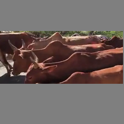
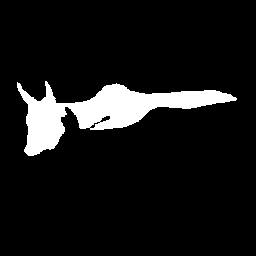
抽样 0 · original
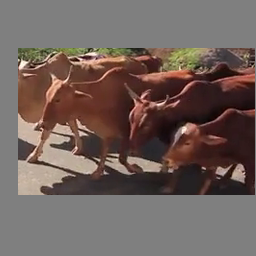
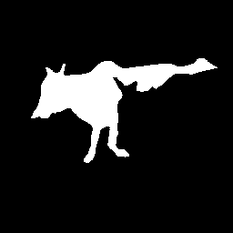
抽样 1 · animal_single_view-000026
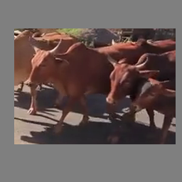
抽样 2 · animal_single_view-000007
Numerous cattle are walking across a paved road, moving in a loose formation. Predominantly reddish-brown with some white markings, the cattle exhibit varied sizes and shapes. Sparse green trees and a clear blue sky form the backdrop, while distant structures and fencing suggest a rural setting. The cattle move steadily, occasionally shifting positions within the group.
cattle · train
akfull_action_recognition_BAAOFDFC_00029000
当前朝向多样性不足 · 最大跨度 0.0°
animal_single_view · 未知 existing_reference
查看随机取图与同步增强（3次可复现抽样）
抽样 0 · original抽样 1 · original抽样 2 · original
Numerous cattle are walking along a paved road, moving in a synchronized manner. Their bodies are predominantly reddish-brown, with some individuals displaying darker patches or horns. The cattle are spaced closely together, creating a herd-like formation as they traverse the sunny, tree-lined area. Shadows cast by the cattle and trees indicate bright daylight conditions.
Two deer are seen grazing peacefully in a lush green pasture, with one deer nursing a calf. The mother deer stands calmly while the calf grazes nearby. Shortly after, another deer enters the frame from the left, running swiftly across the pasture before exiting to the right. The background features dense trees, adding depth to the serene woodland setting.
抽样 0 · original抽样 1 · animal_single_view-000158抽样 2 · original
Facing away from the camera, a juvenile deer grazes on the forest floor amidst scattered leaves and twigs. Its reddish-brown coat contrasts with the green foliage around it. Text overlays provide details about the deer’s species, sleep cycle, rarity, and omnivorous diet.
deer · train
akfull_action_recognition_FDAUHFJG_00000000
当前朝向多样性不足 · 最大跨度 0.0°
animal_single_view · 未知 existing_reference
查看随机取图与同步增强（3次可复现抽样）
抽样 0 · original抽样 1 · original抽样 2 · original
A sambar deer, identified by its scientific name Rusa unicolor, stands amidst dense foliage in a forested area. Covered in mud, it has prominent antlers and alert ears, facing forward with its head slightly lowered. The deer remains mostly stationary, occasionally shifting its gaze and sniffing the ground. Sunlight filters through the canopy, illuminating parts of the deer and the surrounding vegetation.
Two lions are seen walking uphill through a wooded area, their bodies angled forward as they navigate the terrain. Their muscular frames and short tails are visible, and they move steadily with alert postures, occasionally pausing to survey their surroundings. Sparse trees and underbrush surround them, creating a natural habitat backdrop.
Three kangaroos are seen in a grassy field, with one kangaroo standing upright and facing two dogs. The kangaroo appears startled, hopping away quickly while the dogs pursue it. The kangaroo leaps into tall grass,躲避 the dogs' pursuit, and continues hopping through the field. The dogs chase after it, displaying alert and aggressive postures.
dog · train
akfull_action_recognition_EOFBMBME_00000000__dog
当前朝向多样性不足 · 最大跨度 0.0°
animal_single_view · 未知 existing_reference
查看随机取图与同步增强（3次可复现抽样）
抽样 0 · original抽样 1 · original抽样 2 · original
Two horses—a black horse and a white horse with black markings—are standing in a lush forest, surrounded by ferns and trees. A brown dog with pointed ears runs energetically toward them, wagging its tail enthusiastically. The horses remain calm and stationary, occasionally shifting their heads slightly as the dog approaches.
抽样 0 · animal_single_view-000867抽样 1 · animal_single_view-000840抽样 2 · original
An elephant is seen struggling to climb a sandy hill, its legs kicking up dust as it attempts to ascend. The elephant’s trunk is curled, and its tusks are visible as it pushes itself forward. Sparse vegetation and rocky terrain surround the sandy slope, emphasizing the challenging environment. The elephant’s efforts highlight its strength and perseverance against the difficult terrain.
An elephant is walking across a grassy savannah, moving steadily from left to right. Its trunk is raised slightly as it walks, and its ears flutter gently. Sparse acacia trees dot the landscape under a clear blue sky. A lion sits atop a fallen tree branch in the background, observing the elephant.
elephant · train
akfull_action_recognition_ARXXWUDX_00058000
当前朝向多样性不足 · 最大跨度 0.0°
animal_single_view · 未知 existing_reference
查看随机取图与同步增强（3次可复现抽样）
抽样 0 · original抽样 1 · original抽样 2 · original
Seven elephants are walking across a barren savannah landscape, moving steadily from left to right. Sparse acacia trees dot the dry terrain, with rugged mountains rising in the background under a clear sky. The elephants maintain a cohesive group formation as they traverse the open plains.
Six giraffes are seen running across a dry savannah landscape, kicking up dust as they move. Their long necks and distinctive spotted coats are clearly visible. The giraffes maintain a cohesive group formation, galloping steadily across the terrain. Sparse acacia trees dot the background under a clear blue sky.
抽样 0 · animal_single_view-000050抽样 1 · animal_single_view-000065抽样 2 · original
Eight lions surround a giraffe in a savannah setting, with some circling aggressively while others stand nearby. The giraffe appears startled, raising its head and legs defensively as dust kicks up around them. Trees loom behind the group, adding depth to the野生动物 scene.
giraffe · train
akfull_action_recognition_DVNMYKEW_00000000
当前朝向多样性不足 · 最大跨度 0.0°
animal_single_view · 未知 existing_reference
查看随机取图与同步增强（3次可复现抽样）
抽样 0 · original抽样 1 · original抽样 2 · original
A giraffe grazes peacefully among lush green foliage, its long neck bent downward as it feeds on leaves. Its distinctive coat features large, irregular brown patches separated by white lines, and its ossicone stand erect atop its head. The giraffe’s ears twitch occasionally, and its eyes remain calm as it enjoys its meal amidst the verdant surroundings.
抽样 0 · original抽样 1 · animal_single_view-000477抽样 2 · original
Three horses graze peacefully in a lush, verdant pasture dotted with trees and shrubbery. Two horses—one predominantly black with white markings and another mostly white with black patches—stand close together, occasionally shifting their weight or grazing. The third horse, partially visible on the left, blends into the background. The scene exudes tranquility as the horses move slowly through the grassy field.
Two horses—a black horse and a white horse with black markings—are grazing peacefully in a grassy field surrounded by trees and purple flowering shrubs. Both horses are低头 eating grass, standing close together with their heads lowered. The black horse is slightly ahead, while the white horse follows closely behind. The scene is calm and natural, with no visible disturbances or movements apart from the gentle grazing.
horse · train
akfull_action_recognition_AKPNRXGD_00000000
当前朝向多样性不足 · 最大跨度 0.0°
animal_single_view · 未知 existing_reference
查看随机取图与同步增强（3次可复现抽样）
抽样 0 · original抽样 1 · original抽样 2 · original
A deceased horse lies on its side in a grassy field, its body partially covered by a translucent plastic sheet. The horse’s hindquarters and legs are visible, with its hoof raised slightly. The surrounding grass is lush and green, indicating a rural or pastoral setting. The horse appears motionless, suggesting it may have died suddenly or been euthanized.
Three ibexes are resting on a rocky cliffside amidst lush greenery. The adult ibex, distinguished by its curved horns, lies calmly beside two younger ibexes. The youngest ibex rests peacefully on the rock, while the middle ibex occasionally shifts its position slightly. The backdrop features verdant hills and distant mountains, enhancing the serene natural setting.
抽样 0 · animal_single_view-000034抽样 1 · animal_single_view-000034抽样 2 · original
Four goats—two brown and white, one black and white, and one predominantly white—are gathered around a black bowl on dry grass near a gray fence. Two goats leap into the air simultaneously, kicking up dust as they jump. The remaining goats scatter, with one hopping away and another lying down nearby. The scene captures playful movement and spontaneous action among the goats.
sheep_goat · val
akfull_action_recognition_AKRYLKEW_00000000
当前朝向多样性不足 · 最大跨度 0.0°
animal_single_view · 未知 existing_reference
查看随机取图与同步增强（3次可复现抽样）
抽样 0 · original抽样 1 · original抽样 2 · original
Numerous goats are seen running energetically across a grassy field, moving swiftly toward the camera. Their varied coat colors—white, brown, black, and tan—are clearly visible as they leap and trot. Some goats leap over a green metal fence, while others continue running past it. The herd maintains a loose formation, with occasional collisions and nudges as they move dynamically through the pasture.
This multi-camera perspective captures a forward-moving vehicle traveling along a straight, single-laned road bordered by sidewalks and median barriers. The road is flanked by lush green grass verges and mature trees, creating a verdant corridor. Buildings with red-tiled roofs are visible ahead, nestled among the foliage. Streetlights line the road, and a bus stop shelter appears on the right side as the vehicle progresses. Clear skies and bright daylight illuminate the scene, enhancing visibility. No other vehicles or pedestrians are present, and the environment remains calm and orderly throughout the footage.
This multi-camera perspective captures a bustling urban street lined with palm trees and modern buildings, featuring storefronts including Pizza Hut and Monorail Cafe. Vehicles are queued ahead, including a white Audi SUV directly in front of the ego vehicle, while other cars occupy adjacent lanes. Pedestrians stroll along the sidewalk, some pausing near storefronts. Traffic appears congested, with vehicles halted or moving slowly. The scene unfolds under partly cloudy skies, casting soft shadows and diffused light across the pavement and storefronts. Black bollards line the sidewalk, separating vehicular and pedestrian zones. Overall, the environment reflects a lively commercial district with moderate traffic and pedestrian activity.
This multi-camera perspective captures a bustling urban intersection where the ego-vehicle is positioned at a STOP sign, waiting for traffic to clear before proceeding. The scene unfolds under a partly cloudy sky, with ample daylight illuminating the surroundings. Multiple lanes converge at the intersection, accommodating moderate traffic flow. Prominent signage includes STOP signs, directional arrows, and prohibitory signs prohibiting U-turns and left turns. Adjacent to the intersection, a large billboard advertises Luxor, adding to the cityscape’s visual appeal. Vehicles are seen moving in various directions—some queued at the STOP sign, others advancing through the intersection. Pedestrian activity is minimal but noticeable, with a few individuals crossing the road. Buildings flank both sides of the street, featuring ornate facades and modern architecture. Palm trees line the sidewalks, lending a tropical ambiance to the metropolitan setting. Overall, the environment reflects a dynamic yet orderly urban intersection managed efficiently by traffic signals and signage.
This multi-camera perspective captures a vehicle traveling along a multi-laned road marked with dashed yellow lines, navigating through intersections and curvy sections. The road is bordered by sidewalks and features pedestrian crossings, with traffic cones placed strategically to guide vehicles. Adjacent to the roadway, there are buildings with signage advertising construction projects, including advertisements for RIDDC and Mill Creek Homes. Trees and greenery surround the area, contributing to a suburban or semi-industrial setting. Overcast skies dominate the scene, casting diffuse light across the environment. Vehicles are parked along the roadside, and the overall atmosphere suggests a quiet, developing neighborhood with ongoing development projects.
This multi-camera perspective captures a forward-moving vehicle traveling along a multi-laned urban road during daylight hours. The road is divided into four lanes, with the ego-vehicle positioned in the second lane. Traffic flows steadily ahead, consisting of various vehicles including sedans and taxis. Tall palm trees line the roadside, and modern buildings flank both sides of the street. Pedestrian crossings are visible, and a few pedestrians can be seen walking along the sidewalks. Overhead, tram tracks run parallel to the road, adding to the urban infrastructure. The sky is clear, indicating favorable weather conditions conducive to driving.
This multi-camera perspective captures a suburban street scene with a clear sky and ample daylight. The road is paved and divided by a median, featuring a single lane in each direction. Trees line both sides of the road, casting shadows on the pavement. Buildings flank the street, including a modern structure with a distinctive blue and white facade on the right. Vehicles are present, including a gray SUV ahead in the same lane as the ego-vehicle, and a cyclist riding in the opposite direction. Pedestrian activity is also visible, with a person walking along the sidewalk on the left side of the road. The overall environment appears calm and orderly, with no immediate congestion or adverse weather conditions.
This multi-camera perspective captures a white sedan traveling along a multi-laned urban road under clear skies. The vehicle advances steadily toward a crosswalk marked by white stripes, with a minivan directly ahead. Buildings flank both sides of the roadway, including a large structure with columns on the left and a castle-inspired building on the right. Parallel parking is visible along the roadside, and several cars are queued at an intersection ahead. Traffic flows smoothly, with no congestion evident. The scene is well-lit by natural daylight, casting sharp shadows and highlighting the orderly arrangement of vehicles and infrastructure.
This multi-camera perspective captures a bustling urban intersection dominated by a large, modern building with a distinctive curved facade and digital signage. Vehicles are queued at the traffic light, waiting patiently as the signal cycles. Amidst this congestion, a white SUV emerges from the queue, signaling its intention to turn right. Simultaneously, a black sedan advances steadily toward the intersection, navigating through the flow of traffic. Palm trees line the streetscape, adding a tropical flair to the metropolitan setting. Pedestrian activity is minimal but noticeable near the crosswalks, suggesting a well-regulated urban environment. The sky remains overcast, casting a muted light over the scene, which enhances the visibility of architectural details and vehicular movements.
This multi-camera perspective captures a vehicle traveling along a straight segment of a boulevard that connects to a hotel entrance. The road is paved and bordered by manicured landscaping, including trimmed hedges, large planters, and evenly spaced lampposts. Tall trees line the boulevard, providing shade and enhancing the upscale ambiance. In the distance, the hotel’s facade—a modern building with a distinctive architectural design—is visible, featuring a prominent entrance with columns and signage. Vehicles are present near the hotel’s driveway, including a white van and a sedan, suggesting activity at the property. The sky appears overcast, casting soft, diffused light across the scene, which contributes to a calm and orderly atmosphere.